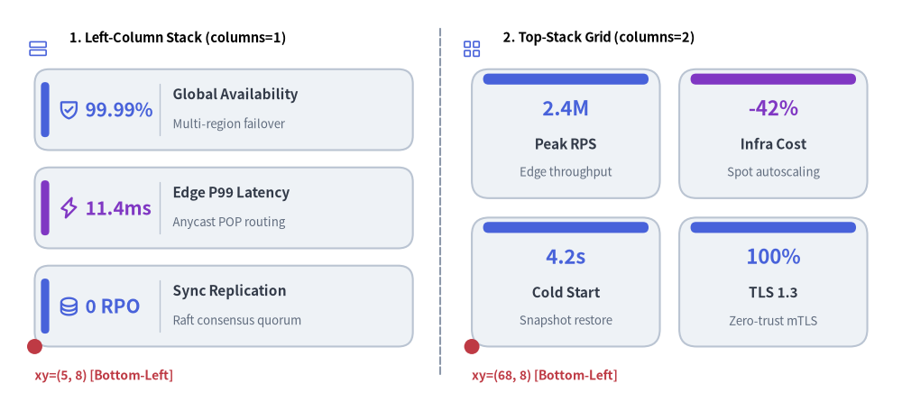
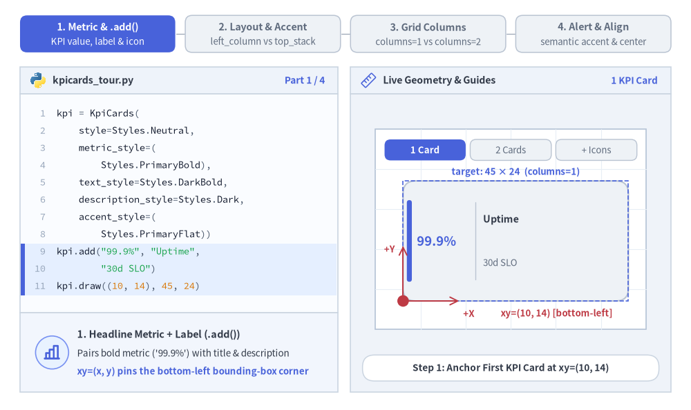
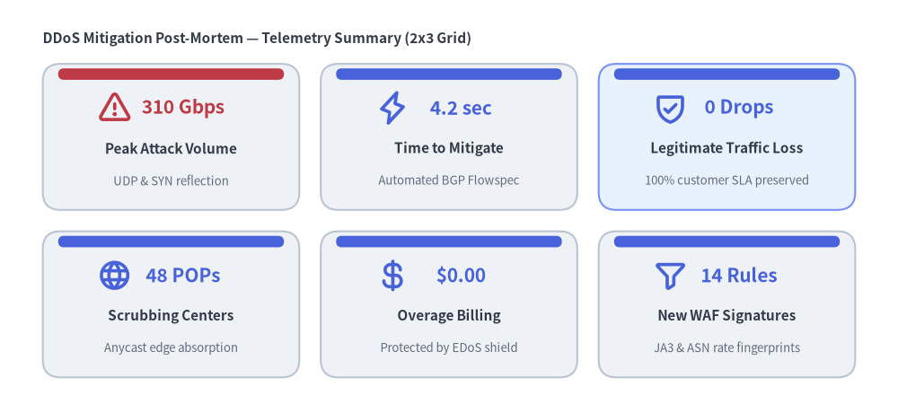

KpiCards（KPI カード）
KpiCards コンポーネント（別名 KpiCard）は、視認性の高いヘッドライン数値やステータストークン（metric）と、構造化されたカードタイトル（text）・補足説明（description）・オプションのベクター icon・アクセント表示（"left_pill"、"top_bar"、"none"）を組み合わせた指標ハイライトカードを描画します。
垂直スタック（columns=1）と複数列ダッシュボードグリッド（columns=2..N）の両方に対応しており、SLA 目標、ベンチマーク結果の要約、エグゼクティブ向け KPI サマリーに最適です。

Source Code
from drawlib.canvas import save, setup
from drawlib.icons import phosphor
from drawlib.lines import line
from drawlib.shapes import circle
from drawlib.smartarts import KpiCards
from drawlib.styles import Styles
from drawlib.text import text
setup(width=130, height=58)
# Subtle center divider
line((63.5, 4.0), (63.5, 54.0), style=Styles.MutedDashed)
# 1. Left Panel: Vertical Stack (metric_layout="left_column", accent_position="left_pill")
phosphor.rows(xy=(5.5, 51.0), width=3.4, style=Styles.PrimaryFlat)
text((10.0, 52.5), "1. Left-Column Stack (columns=1)", style=Styles.BlackBold.patch(text_size=10.5, halign="left"))
kpi_stack = KpiCards(
style=Styles.Neutral,
metric_style=Styles.PrimaryBold.patch(text_size=15.0),
text_style=Styles.DarkBold.patch(text_size=11.0),
description_style=Styles.Muted.patch(text_size=9.5),
accent_style=Styles.PrimaryFlat,
icon_style=Styles.PrimaryBold,
accent_position="left_pill",
metric_layout="left_column",
metric_width_ratio=0.30,
spacing=2.5,
)
kpi_stack.add("99.99%", "Global Availability", "Multi-region failover", icon=phosphor.shield_check)
kpi_stack.add(
"11.4ms",
"Edge P99 Latency",
"Anycast POP routing",
icon=phosphor.lightning,
metric_style=Styles.AccentBold.patch(text_size=15.0),
accent_style=Styles.AccentFlat,
icon_style=Styles.AccentBold,
)
kpi_stack.add("0 RPO", "Sync Replication", "Raft consensus quorum", icon=phosphor.database)
kpi_stack.draw(xy=(5.0, 8.0), width=54.5, height=40.0, columns=1)
circle((5.0, 8.0), radius=1.1, style=Styles.DangerFlat)
text((5.0, 3.8), "xy=(5, 8) [Bottom-Left]", style=Styles.DangerBold.patch(text_size=10.0, halign="left"))
# 2. Right Panel: 2x2 Dashboard Grid (metric_layout="top_stack", accent_position="top_bar")
phosphor.squares_four(xy=(68.0, 51.0), width=3.4, style=Styles.PrimaryFlat)
text((72.5, 52.5), "2. Top-Stack Grid (columns=2)", style=Styles.BlackBold.patch(text_size=10.5, halign="left"))
kpi_grid = KpiCards(
style=Styles.Neutral,
metric_style=Styles.PrimaryBold.patch(text_size=16.0),
text_style=Styles.DarkBold.patch(text_size=11.0),
description_style=Styles.Muted.patch(text_size=9.5),
accent_style=Styles.PrimaryFlat,
accent_position="top_bar",
metric_layout="top_stack",
spacing=2.8,
)
kpi_grid.add("2.4M", "Peak RPS", "Edge throughput")
kpi_grid.add(
"-42%",
"Infra Cost",
"Spot autoscaling",
metric_style=Styles.AccentBold.patch(text_size=16.0),
accent_style=Styles.AccentFlat,
)
kpi_grid.add("4.2s", "Cold Start", "Snapshot restore")
kpi_grid.add("100%", "TLS 1.3", "Zero-trust mTLS")
kpi_grid.draw(xy=(68.0, 8.0), width=57.0, height=40.0, columns=2)
circle((68.0, 8.0), radius=1.1, style=Styles.DangerFlat)
text((68.0, 3.8), "xy=(68, 8) [Bottom-Left]", style=Styles.DangerBold.patch(text_size=10.0, halign="left"))
save()
1. 基本概念と基本的な使い方
KpiCards（別名 KpiCard）は .add(...) を通じて視認性の高いヘッドライン数値（metric）とタイトル・説明文・アイコンを組み合わせ、デフォルトで左下角 (x, y)（align="center" の場合は中央）を基準に配置します。"left_pill"・"top_bar"・"none" のアクセント表示とともに、左右分割型の left_column と中央積み上げ型の top_stack を切り替えられるほか、columns=1 の縦スタックから複数列グリッドへの展開、個々の .items[i] セルのスタイル変更や非表示化に対応しています。

Source Code
from __future__ import annotations
from drawlib.anim import Animation
from drawlib.canvas import save, setup
from drawlib.icons import code as code_icons
from drawlib.icons import phosphor
from drawlib.lines import line
from drawlib.shapes import circle, rectangle
from drawlib.smartarts import KpiCards, SourceCode, SourceCodeStyles
from drawlib.styles import Styles
from drawlib.text import text
W, H = 138.0, 82.0
setup(width=W, height=H)
anim = Animation(fps=10.0, loop=0)
CODE_TEXT_SIZE = 10.0
PT_TO_CANVAS = W / 720.0
FONT_CANVAS = CODE_TEXT_SIZE * PT_TO_CANVAS
LINE_H = FONT_CANVAS * 1.8
PAD_Y = FONT_CANVAS * 1.2
CODE_STYLES = SourceCodeStyles.get("default", font_lang="en", text_size=CODE_TEXT_SIZE).patch(
box_style=Styles.Neutral.patch(shape_fill_color=(0, 0, 0, 0), shape_line_width=0),
)
PANE_HEADER = Styles.Neutral.patch(
shape_fill_color=(238, 243, 250),
shape_line_color=(203, 213, 225),
shape_line_width=1.2,
shape_r=0.0,
)
EDITOR_BODY = Styles.Neutral.patch(
shape_fill_color=(250, 252, 255),
shape_line_color=(203, 213, 225),
shape_line_width=1.2,
shape_r=0.0,
)
TAKEAWAY_BODY = Styles.Neutral.patch(
shape_fill_color=(242, 246, 253),
shape_line_color=(203, 213, 225),
shape_line_width=1.2,
shape_r=0.0,
)
STUDIO_BODY = Styles.Neutral.patch(
shape_fill_color=(239, 243, 249),
shape_line_color=(203, 213, 225),
shape_line_width=1.2,
shape_r=0.0,
)
PART_ITEMS = [
("1. Metric & .add()", "KPI value, label & icon"),
("2. Layout & Accent", "left_column vs top_stack"),
("3. Grid Columns", "columns=1 vs columns=2"),
("4. Alert & Align", "semantic accent & center"),
]
def draw_step_bar(active_part: int) -> None:
"""Draw top 4-part progress bar (active_part is 1..4)."""
pill_w = 31.0
pill_h = 7.4
gap = 2.0
start_x = 4.0 + pill_w / 2.0
cy = 75.2
for idx, (label, sublabel) in enumerate(PART_ITEMS, start=1):
cx = start_x + (idx - 1) * (pill_w + gap)
if idx > 1:
prev_cx = cx - (pill_w + gap)
line(
(prev_cx + pill_w / 2.0 + 0.2, cy),
(cx - pill_w / 2.0 - 0.2, cy),
style=Styles.PrimaryBold if idx <= active_part else Styles.MutedThin,
)
if idx == active_part:
st = Styles.PrimaryFlat.patch(shape_r=1.4)
tst = Styles.WhiteBold.patch(text_size=10.3)
sub_tst = Styles.White.patch(text_size=9.5)
elif idx < active_part:
st = Styles.PrimaryNeutral.patch(shape_r=1.4, shape_line_width=1.1)
tst = Styles.PrimaryBold.patch(text_size=10.3)
sub_tst = Styles.Primary.patch(text_size=9.5)
else:
st = Styles.Neutral.patch(shape_r=1.4, shape_line_width=1.1)
tst = Styles.MutedBold.patch(text_size=10.3)
sub_tst = Styles.Muted.patch(text_size=9.5)
rectangle((cx, cy), width=pill_w, height=pill_h, style=st)
text((cx, cy + 1.35), label, style=tst)
text((cx, cy - 1.55), sublabel, style=sub_tst)
def draw_left_pane(
active_part: int,
code_lines: list[str],
hl_range: tuple[int, int],
icon_fn: object,
summary_title: str,
summary_line1: str,
summary_line2: str,
) -> None:
"""Draw left Python code editor + bottom concept takeaway card."""
x0, w = 4.0, 63.5
cx = x0 + w / 2.0
top_y = 63.2
header_h = 5.4
editor_h = 43.8
takeaway_h = 15.8
rectangle((cx, top_y + header_h / 2.0), width=w, height=header_h, style=PANE_HEADER)
code_icons.python((x0 + 3.6, top_y + header_h / 2.0), width=3.4, style=Styles.Neutral)
text(
(x0 + 6.5, top_y + header_h / 2.0),
"kpicards_tour.py",
style=Styles.DarkBold.patch(text_size=10.2, halign="left"),
)
text(
(x0 + w - 2.6, top_y + header_h / 2.0),
f"Part {active_part} / 4",
style=Styles.PrimaryBold.patch(text_size=9.8, halign="right"),
)
rectangle((cx, top_y - editor_h / 2.0), width=w, height=editor_h, style=EDITOR_BODY)
hl_start, hl_end = hl_range
hl_top = top_y - PAD_Y - hl_start * LINE_H
hl_bot = top_y - PAD_Y - (hl_end + 1) * LINE_H
hl_cy = (hl_top + hl_bot) / 2.0
hl_h = hl_top - hl_bot
rectangle(
(cx, hl_cy),
width=w - 0.6,
height=hl_h,
style=Styles.Neutral.patch(shape_fill_color=(229, 239, 255), shape_line_width=0),
)
rectangle(
(x0 + 0.55, hl_cy),
width=0.9,
height=hl_h,
style=Styles.PrimaryFlat.patch(shape_line_width=0),
)
SourceCode.draw(
xy=(x0, top_y),
width=w,
code="\n".join(code_lines),
styles=CODE_STYLES,
code_lang="python",
show_linenum=True,
align="top_left",
)
take_cy = 3.6 + takeaway_h / 2.0
rectangle((cx, take_cy), width=w, height=takeaway_h, style=TAKEAWAY_BODY)
circle(
(x0 + 6.4, take_cy),
radius=3.3,
style=Styles.PrimaryNeutral.patch(shape_line_width=1.2),
)
icon_fn((x0 + 6.4, take_cy), width=3.8, style=Styles.PrimaryBold) # type: ignore[operator]
text(
(x0 + 11.4, take_cy + 3.6),
summary_title,
style=Styles.DarkBold.patch(text_size=10.4, halign="left"),
)
text(
(x0 + 11.4, take_cy - 0.2),
summary_line1,
style=Styles.Dark.patch(text_size=9.7, halign="left"),
)
text(
(x0 + 11.4, take_cy - 3.8),
summary_line2,
style=Styles.PrimaryBold.patch(text_size=9.6, halign="left"),
)
def draw_geometry_studio(param_badge: str, footer_caption: str) -> tuple[float, float]:
"""Draw right geometry lab shell, inner coordinate sheet with subtle grid, and footer."""
x0, w = 70.0, 64.0
cx = x0 + w / 2.0
top_y = 63.2
header_h = 5.4
body_h = 59.6
rectangle((cx, top_y + header_h / 2.0), width=w, height=header_h, style=PANE_HEADER)
phosphor.ruler((x0 + 3.6, top_y + header_h / 2.0), width=3.4, style=Styles.Primary)
text(
(x0 + 6.5, top_y + header_h / 2.0),
"Live Geometry & Guides",
style=Styles.DarkBold.patch(text_size=10.2, halign="left"),
)
text(
(x0 + w - 2.6, top_y + header_h / 2.0),
param_badge,
style=Styles.PrimaryBold.patch(text_size=9.6, halign="right"),
)
rectangle((cx, 3.6 + body_h / 2.0), width=w, height=body_h, style=STUDIO_BODY)
sheet_cx, sheet_cy = cx, 36.2
sheet_w, sheet_h = 54.0, 40.0
sx0, sy0 = sheet_cx - sheet_w / 2.0, sheet_cy - sheet_h / 2.0
rectangle(
(sheet_cx, sheet_cy),
width=sheet_w,
height=sheet_h,
style=Styles.Neutral.patch(
shape_fill_color=(255, 255, 255),
shape_line_color=(180, 194, 214),
shape_line_width=1.2,
),
)
g_st = Styles.MutedThin.patch(line_color=(232, 238, 246), line_width=0.8)
for gx in range(1, 6):
vx = sx0 + gx * (sheet_w / 6.0)
line((vx, sy0), (vx, sy0 + sheet_h), style=g_st)
for gy in range(1, 5):
vy = sy0 + gy * (sheet_h / 5.0)
line((sx0, vy), (sx0 + sheet_w, vy), style=g_st)
rectangle(
(cx, 8.4),
width=59.2,
height=5.2,
style=Styles.Neutral.patch(
shape_fill_color=(255, 255, 255),
shape_line_color=(203, 213, 225),
shape_line_width=1.1,
shape_r=2.4,
),
text=footer_caption,
text_style=Styles.DarkBold.patch(text_size=9.8),
)
return sheet_cx, sheet_cy
def draw_sub_pills(scx: float, labels: list[str], active_idx: int) -> None:
"""Draw 3-step tracker pills near the top of the studio sheet."""
pw, ph, pgap = 16.2, 4.2, 0.9
p_start = scx - (3 * pw + 2 * pgap) / 2.0 + pw / 2.0
for idx, lbl in enumerate(labels):
px = p_start + idx * (pw + pgap)
if idx == active_idx:
pst = Styles.PrimaryFlat.patch(shape_r=1.2)
ptst = Styles.WhiteBold.patch(text_size=9.5)
elif idx < active_idx:
pst = Styles.PrimaryNeutral.patch(shape_r=1.2, shape_line_width=1.0)
ptst = Styles.PrimaryBold.patch(text_size=9.5)
else:
pst = Styles.Neutral.patch(shape_r=1.2, shape_line_width=1.0)
ptst = Styles.Muted.patch(text_size=9.5)
rectangle((px, 52.0), width=pw, height=ph, style=pst, text=lbl, text_style=ptst)
METRIC_PRI = Styles.PrimaryBold.patch(text_size=12.8)
METRIC_GRID = Styles.PrimaryBold.patch(text_size=13.2)
TITLE_DARK = Styles.DarkBold.patch(text_size=10.2)
DESC_DARK = Styles.Muted.patch(text_size=9.5)
# =========================================================================
# Part 1: Metric & .add() — Bottom-Left Anchor & Progressive KPI Stack
# =========================================================================
METRIC_STATES = [
(
"one_card",
3.3,
[
"kpi = KpiCards(",
" style=Styles.Neutral,",
" metric_style=(",
" Styles.PrimaryBold),",
" text_style=Styles.DarkBold,",
" description_style=Styles.Dark,",
" accent_style=(",
" Styles.PrimaryFlat))",
'kpi.add("99.9%", "Uptime",',
' "30d SLO")',
"kpi.draw((10, 14), 45, 24)",
],
(8, 10),
"1 KPI Card",
"Step 1: Anchor First KPI Card at xy=(10, 14)",
"1. Headline Metric + Label (.add())",
"Pairs bold metric ('99.9%') with title & description",
"xy=(x, y) pins the bottom-left bounding-box corner",
),
(
"two_cards",
3.3,
[
"kpi = KpiCards(",
" style=Styles.Neutral, ...)",
'kpi.add("99.9%", "Uptime",',
' "30d SLO")',
"kpi.add(",
' "8 ms",',
' "Latency",',
' "Edge P99")',
"kpi.draw(",
" xy=(10, 14), width=45,",
" height=24, columns=1)",
],
(4, 10),
"2 KPI Cards",
"Step 2: Add Second Card to Subdivide 45 × 24",
"2. Vertical SLO Stack (columns=1)",
"Default columns=1 stacks KPI rows top-to-bottom",
"Automatically subdivides height=24 across cards",
),
(
"with_icons",
3.5,
[
"kpi = KpiCards(",
" style=Styles.Neutral, ...,",
" icon_style=Styles.PrimaryBold)",
"kpi.add(",
' "99.9%", "Uptime", "30d SLO",',
" icon=phosphor.shield_check)",
"kpi.add(",
' "8 ms", "Latency", "Edge P99",',
" icon=phosphor.lightning)",
"kpi.draw((10, 14), 45, 24,",
" columns=1)",
],
(2, 8),
"Icons Added",
"Step 3: Add Vector Icons Beside KPI Metrics",
"3. Vector Icons + Accent Pill",
"Pass icon=... (with icon_style) to enrich KPI rows",
"Calm Neutral card fills keep numbers razor-sharp",
),
]
for m_idx, (m_state, dur, code_m, hl_rng, badge_txt, foot_txt, s_t, s_1, s_2) in enumerate(METRIC_STATES):
with anim.frame(duration=dur):
draw_step_bar(1)
draw_left_pane(1, code_m, hl_rng, phosphor.chart_bar, s_t, s_1, s_2)
scx, scy = draw_geometry_studio(badge_txt, foot_txt)
draw_sub_pills(scx, ["1 Card", "2 Cards", "+ Icons"], m_idx)
px0, py0, pw_tot, ph_tot = 80.5, 21.8, 45.0, 24.0
use_icons = m_state == "with_icons"
kpi = KpiCards(
style=Styles.Neutral,
metric_style=Styles.PrimaryBold.patch(text_size=12.4 if use_icons else 13.4),
text_style=TITLE_DARK,
description_style=DESC_DARK,
accent_style=Styles.PrimaryFlat,
icon_style=Styles.PrimaryBold if use_icons else None,
accent_position="left_pill",
metric_layout="left_column",
metric_width_ratio=0.38 if use_icons else 0.32,
spacing=2.6,
)
kpi.add(
"99.9%",
"Uptime",
"30d SLO",
icon=phosphor.shield_check if use_icons else None,
)
if m_state in ("two_cards", "with_icons"):
kpi.add(
"8 ms",
"Latency",
"Edge P99",
icon=phosphor.lightning if use_icons else None,
)
kpi.draw(xy=(px0, py0), width=pw_tot, height=ph_tot, columns=1)
rectangle(
(px0 + pw_tot / 2.0, py0 + ph_tot / 2.0),
width=pw_tot,
height=ph_tot,
style=Styles.PrimaryDashed.patch(shape_fill_color=(0, 0, 0, 0), shape_line_width=1.2),
)
text(
(px0 + pw_tot / 2.0, py0 + ph_tot + 1.8),
"target: 45 × 24 (columns=1)",
style=Styles.PrimaryBold.patch(text_size=9.5),
)
# Bottom-Left xy anchor dot + +X / +Y Cartesian axes
line(
(px0, py0),
(px0, py0 + 11.0),
arrow_head="->",
style=Styles.DangerBold.patch(line_width=1.4),
)
text(
(px0 - 2.7, py0 + 10.4),
"+Y",
style=Styles.DangerBold.patch(text_size=9.5),
)
line(
(px0, py0),
(px0 + 11.2, py0),
arrow_head="->",
style=Styles.DangerBold.patch(line_width=1.4),
)
text(
(px0 + 12.0, py0 - 2.5),
"+X",
style=Styles.DangerBold.patch(text_size=9.5, halign="left"),
)
circle((px0, py0), radius=1.15, style=Styles.DangerFlat)
text(
(px0 + 19.5, py0 - 2.5),
"xy=(10, 14) [bottom-left]",
style=Styles.DangerBold.patch(text_size=9.5, halign="left"),
)
# =========================================================================
# Part 2: Layout & Accent — left_column vs top_stack & accent_position
# =========================================================================
LAYOUT_STATES = [
(
"left_column",
"left_pill",
3.3,
[
"kpi = KpiCards(",
" style=Styles.Neutral, ...,",
' metric_layout="left_column",',
' accent_position="left_pill",',
" accent_style=(",
" Styles.PrimaryFlat))",
'kpi.add("99.9%", "Uptime", "SLO")',
'kpi.add("8 ms", "Latency", "P99")',
"kpi.draw((10, 14), 45, 24,",
" columns=1)",
],
(2, 5),
"left_column",
'metric_layout="left_column" + "left_pill" Accent',
"Side-by-Side Layout (left_column)",
"Splits left metric zone from right title & description",
"Pairs naturally with vertical left_pill accent bar",
),
(
"top_stack",
"top_bar",
3.3,
[
"kpi = KpiCards(",
" style=Styles.Neutral, ...,",
' metric_layout="top_stack",',
' accent_position="top_bar",',
" accent_style=(",
" Styles.PrimaryFlat))",
'kpi.add("99.9%", "Uptime", "SLO")',
'kpi.add("8 ms", "Latency", "P99")',
"kpi.draw((10, 14), 45, 24,",
" columns=1)",
],
(2, 3),
"top_stack",
'metric_layout="top_stack" + "top_bar" Accent',
"Centered Stack Layout (top_stack)",
"Stacks large metric above centered title & subtitle",
"Top horizontal accent bar frames multi-column tiles",
),
(
"top_stack",
"none",
3.4,
[
"kpi = KpiCards(",
" style=Styles.Neutral, ...,",
' metric_layout="top_stack",',
' accent_position="none",',
")",
'kpi.add("99.9%", "Uptime", "SLO")',
'kpi.add("8 ms", "Latency", "P99")',
"kpi.draw((10, 14), 45, 24,",
" columns=1)",
],
(3, 3),
'accent="none"',
'accent_position="none": Minimal Border-Only Cards',
'No Accent Indicator (accent_position="none")',
"Omits colored accent bar; accent_style not required",
"Produces ultra-clean neutral summary cards",
),
]
for l_idx, (m_lay, acc_pos, dur, code_l, hl_rng, badge_txt, foot_txt, s_t, s_1, s_2) in enumerate(LAYOUT_STATES):
with anim.frame(duration=dur):
draw_step_bar(2)
draw_left_pane(2, code_l, hl_rng, phosphor.layout, s_t, s_1, s_2)
scx, scy = draw_geometry_studio(badge_txt, foot_txt)
draw_sub_pills(scx, ["left_column", "top_stack", 'accent="none"'], l_idx)
px0, py0, pw_tot, ph_tot = 79.5, 22.8, 45.0, 24.0
kpi = KpiCards(
style=Styles.Neutral,
metric_style=METRIC_PRI,
text_style=TITLE_DARK,
description_style=DESC_DARK,
accent_style=Styles.PrimaryFlat if acc_pos != "none" else None,
accent_position=acc_pos, # type: ignore[arg-type]
metric_layout=m_lay, # type: ignore[arg-type]
metric_width_ratio=0.33,
spacing=2.6,
)
kpi.add("99.9%", "Uptime", "30d SLO")
kpi.add("8 ms", "Latency", "Edge P99")
kpi.draw(xy=(px0, py0), width=pw_tot, height=ph_tot, columns=1)
if l_idx == 0:
text(
(scx, 18.6),
'left_column + accent_position="left_pill"',
style=Styles.PrimaryBold.patch(text_size=9.5),
)
elif l_idx == 1:
text(
(scx, 18.6),
'top_stack + accent_position="top_bar"',
style=Styles.PrimaryBold.patch(text_size=9.5),
)
else:
text(
(scx, 18.6),
'accent_position="none" (clean border-only)',
style=Styles.DarkBold.patch(text_size=9.5),
)
# =========================================================================
# Part 3: Grid Columns — columns=1 vs columns=2 & spacing / ratio
# =========================================================================
GRID_STATES = [
(
"col_1",
3.3,
[
"kpi = KpiCards(",
" style=Styles.Neutral, ...,",
' metric_layout="top_stack",',
' accent_position="top_bar",',
" spacing=2.6)",
'kpi.add("99.9%", "Uptime")',
'kpi.add("8 ms", "Latency")',
"kpi.draw(",
" xy=(9, 14), width=47,",
" height=25, columns=1)",
],
(7, 9),
"columns = 1",
"columns=1 (Default): Single-Column KPI Stack",
"Single-Column Stack (columns=1)",
"Each card spans full width=47 in a single column",
"Best for 2–3 narrative KPIs with wide descriptions",
),
(
"col_2",
3.3,
[
"kpi = KpiCards(",
' ..., metric_layout="top_stack"',
")",
'kpi.add("99.9%", "Uptime")',
'kpi.add("8 ms", "Latency")',
'kpi.add("0", "Errors")',
'kpi.add("4.2k", "RPS")',
"kpi.draw(",
" xy=(9, 14), width=47,",
" height=25, columns=2)",
],
(3, 9),
"columns = 2",
"columns=2: 4 Cards in a 2×2 Dashboard Grid",
"Multi-Column Dashboard Grid (columns=2)",
"Places items row-major (top-to-bottom, left-to-right)",
"items[0..1] fill top row; items[2..3] fill bottom row",
),
(
"ratio_spacing",
3.5,
[
"kpi = KpiCards(",
" style=Styles.Neutral, ...,",
' metric_layout="left_column",',
" metric_width_ratio=0.45,",
" spacing=4.2)",
'kpi.add("99.9%", "Uptime")',
'kpi.add("8 ms", "Latency")',
'kpi.add("0", "Errors")',
'kpi.add("4.2k", "RPS")',
"kpi.draw((9, 14), 47, 25,",
" columns=2)",
],
(2, 4),
"spacing & ratio",
"Custom spacing=4.2 & metric_width_ratio=0.45",
"Fine-Tune Grid Gaps & Metric Split",
"spacing widens both row and column gutters evenly",
"metric_width_ratio (0.1..0.7) sizes left metric zone",
),
]
for g_idx, (g_mode, dur, code_g, hl_rng, badge_txt, foot_txt, s_t, s_1, s_2) in enumerate(GRID_STATES):
with anim.frame(duration=dur):
draw_step_bar(3)
draw_left_pane(3, code_g, hl_rng, phosphor.squares_four, s_t, s_1, s_2)
scx, scy = draw_geometry_studio(badge_txt, foot_txt)
draw_sub_pills(scx, ["columns = 1", "columns = 2", "spacing & ratio"], g_idx)
if g_mode == "col_1":
kpi = KpiCards(
style=Styles.Neutral,
metric_style=METRIC_GRID,
text_style=TITLE_DARK,
accent_style=Styles.PrimaryFlat,
accent_position="top_bar",
metric_layout="top_stack",
spacing=2.6,
)
kpi.add("99.9%", "Uptime")
kpi.add("8 ms", "Latency")
kpi.draw(xy=(78.5, 22.4), width=47.0, height=24.6, columns=1)
text(
(scx, 18.5),
"columns = 1 (2 stacked full-width cards)",
style=Styles.DarkBold.patch(text_size=9.5),
)
elif g_mode == "col_2":
kpi = KpiCards(
style=Styles.Neutral,
metric_style=METRIC_GRID,
text_style=TITLE_DARK,
accent_style=Styles.PrimaryFlat,
accent_position="top_bar",
metric_layout="top_stack",
spacing=2.6,
)
kpi.add("99.9%", "Uptime")
kpi.add("8 ms", "Latency")
kpi.add("0", "Errors")
kpi.add("4.2k", "RPS")
kpi.draw(xy=(78.5, 22.4), width=47.0, height=24.6, columns=2)
text(
(scx, 18.5),
"columns = 2 (2×2 row-major dashboard grid)",
style=Styles.PrimaryBold.patch(text_size=9.5),
)
else:
gx0, gy0, gw_tot, gh_tot, g_spc = 78.5, 21.8, 47.0, 23.6, 4.2
cw_g = (gw_tot - g_spc) / 2.0
kpi = KpiCards(
style=Styles.Neutral,
metric_style=Styles.PrimaryBold.patch(text_size=11.0),
text_style=Styles.DarkBold.patch(text_size=10.0),
accent_style=Styles.PrimaryFlat,
accent_position="left_pill",
metric_layout="left_column",
metric_width_ratio=0.45,
spacing=g_spc,
)
kpi.add("99.9%", "Uptime")
kpi.add("8 ms", "Latency")
kpi.add("0", "Errors")
kpi.add("4.2k", "RPS")
kpi.draw(xy=(gx0, gy0), width=gw_tot, height=gh_tot, columns=2)
# Top caliper showing metric_width_ratio=0.45 on top-left card
m_right = gx0 + cw_g * 0.45
cal_y = gy0 + gh_tot + 1.8
line((gx0, cal_y), (m_right, cal_y), arrow_head="<->", style=Styles.PrimaryBold.patch(line_width=1.3))
text(
(m_right + 1.1, cal_y),
"metric_width_ratio = 0.45",
style=Styles.PrimaryBold.patch(text_size=9.5, halign="left"),
)
# Bottom caliper showing spacing=4.2 column gutter
g_x1, g_x2 = gx0 + cw_g, gx0 + cw_g + g_spc
line((g_x1, gy0 - 0.4), (g_x1, 19.6), style=Styles.DangerBold.patch(line_width=1.2))
line((g_x2, gy0 - 0.4), (g_x2, 19.6), style=Styles.DangerBold.patch(line_width=1.2))
text(
(scx, 18.0),
"spacing = 4.2 (row & column gutter)",
style=Styles.DangerBold.patch(text_size=9.5),
)
# =========================================================================
# Part 4: Alert & Align — Semantic Danger Accent, show=False & center
# =========================================================================
ALERT_STATES = [
(
"semantic_alert",
3.3,
[
"kpi = KpiCards(..., spacing=2.8)",
'kpi.add("99.9%", "Uptime")',
'kpi.add("8 ms", "Latency")',
'kpi.add("4.2k", "RPS")',
'kpi.add("12", "Errors")',
"kpi.items[3].accent_style = (",
" Styles.DangerFlat)",
"kpi.items[3].metric_style = (",
" Styles.DangerBold)",
"kpi.draw((9, 14), 47, 25,",
" columns=2)",
],
(5, 8),
"Danger Alert",
"Semantic Alert: items[3] DangerFlat & DangerBold",
"Per-Card Semantic Alert (.items[3])",
"Highlight threshold breaches with DangerFlat & Bold",
"Keeps all 4 card surfaces Neutral (no rainbow fills)",
),
(
"hide_cell",
3.4,
[
"kpi = KpiCards(..., spacing=2.8)",
'kpi.add("99.9%", "Uptime")',
'kpi.add("8 ms", "Latency")',
'kpi.add("4.2k", "RPS")',
'kpi.add("12", "Errors")',
"",
"# Hide cell; 2x2 grid slots stay!",
"kpi.items[2].show = False",
"",
"kpi.draw((9, 14), 47, 25,",
" columns=2)",
],
(6, 7),
"items[2].show=False",
"kpi.items[2].show = False: Preserves 2×2 Cells",
"Cell-Preserving Visibility (.show = False)",
"Skips rendering items[2] without reflowing siblings",
"items[0, 1, 3] remain locked in their exact cells",
),
(
"center_align",
3.6,
[
"kpi = KpiCards(..., spacing=2.8)",
'kpi.add("99.9%", "Uptime")',
'kpi.add("8 ms", "Latency")',
'kpi.add("4.2k", "RPS")',
'kpi.add("12", "Errors")',
"",
"# Center 2x2 grid on (cx, cy)",
"kpi.draw(",
" xy=(32, 26), width=47,",
" height=25, columns=2,",
' align="center")',
],
(6, 10),
'align = "center"',
'align="center": Centers 2×2 Grid on xy=(cx, cy)',
'Centered Grid Anchor (align="center")',
"Centers total (width, height) grid box on (cx, cy)",
"Crosshair sits right at the 2×2 gutter intersection",
),
]
for a_idx, (a_mode, dur, code_a, hl_rng, badge_txt, foot_txt, s_t, s_1, s_2) in enumerate(ALERT_STATES):
with anim.frame(duration=dur):
draw_step_bar(4)
draw_left_pane(4, code_a, hl_rng, phosphor.warning_circle, s_t, s_1, s_2)
scx, scy = draw_geometry_studio(badge_txt, foot_txt)
draw_sub_pills(scx, ["Danger Alert", ".show = False", 'align="center"'], a_idx)
pw_tot, ph_tot, spc = 47.0, 24.4, 2.8
cw_a = (pw_tot - spc) / 2.0
ch_a = (ph_tot - spc) / 2.0
kpi = KpiCards(
style=Styles.Neutral,
metric_style=METRIC_GRID,
text_style=TITLE_DARK,
description_style=DESC_DARK,
accent_style=Styles.PrimaryFlat,
accent_position="top_bar",
metric_layout="top_stack",
spacing=spc,
)
kpi.add("99.9%", "Uptime", "30d SLO")
kpi.add("8 ms", "Latency", "Edge P99")
kpi.add("4.2k", "RPS", "Peak load")
kpi.add("12", "Errors", "5xx spike")
if a_mode == "semantic_alert":
kpi.items[3].accent_style = Styles.DangerFlat
kpi.items[3].metric_style = Styles.DangerBold.patch(text_size=13.2)
kpi.draw(xy=(78.5, 22.4), width=pw_tot, height=ph_tot, columns=2)
text(
(scx, 18.5),
"items[3]: DangerFlat bar + DangerBold metric",
style=Styles.DangerBold.patch(text_size=9.5),
)
elif a_mode == "hide_cell":
kpi.items[3].accent_style = Styles.DangerFlat
kpi.items[3].metric_style = Styles.DangerBold.patch(text_size=13.2)
kpi.items[2].show = False
px0, py0 = 78.5, 22.4
kpi.draw(xy=(px0, py0), width=pw_tot, height=ph_tot, columns=2)
rectangle(
(px0 + cw_a / 2.0, py0 + ch_a / 2.0),
width=cw_a,
height=ch_a,
style=Styles.MutedDashed.patch(
shape_fill_color=(248, 250, 252),
shape_line_color=(148, 163, 184),
shape_line_width=1.2,
shape_r=2.0,
),
text="items[2] hidden\ncell preserved",
text_style=Styles.MutedBold.patch(text_size=9.5),
)
text(
(scx, 18.5),
"items[0, 1, 3] keep exact 2×2 grid coordinates",
style=Styles.PrimaryBold.patch(text_size=9.5),
)
else:
cx_a, cy_a = scx, 34.4
kpi.items[3].accent_style = Styles.DangerFlat
kpi.items[3].metric_style = Styles.DangerBold.patch(text_size=13.2)
kpi.draw(xy=(cx_a, cy_a), width=pw_tot, height=ph_tot, columns=2, align="center")
rectangle(
(cx_a, cy_a),
width=pw_tot,
height=ph_tot,
style=Styles.PrimaryDashed.patch(shape_fill_color=(0, 0, 0, 0), shape_line_width=1.3),
)
# Red (cx, cy) crosshair along central gutters & outside bounding box
line((cx_a - 25.6, cy_a), (cx_a + 25.6, cy_a), style=Styles.DangerBold.patch(line_width=1.3))
line((cx_a, cy_a - 14.0), (cx_a, cy_a + 14.0), style=Styles.DangerBold.patch(line_width=1.3))
circle(
(cx_a, cy_a),
radius=1.65,
style=Styles.Neutral.patch(shape_fill_color=(255, 255, 255), shape_line_width=0),
)
circle((cx_a, cy_a), radius=1.15, style=Styles.DangerFlat)
text(
(cx_a, 18.2),
'xy = (32, 26) • align = "center"',
style=Styles.DangerBold.patch(text_size=9.5),
)
save()
- ヘッドライン指標とアンカー（
xy,align）:.add(metric, text, description, icon=...)で KPI カードを登録し、デフォルトの左下xy（align="bottom_left"）または中央（align="center"）を基準に(width, height)領域内へ描画します。 - 内部レイアウトとアクセント（
metric_layout,accent_position）: 左右分割型の行カードにはmetric_layout="left_column"とaccent_position="left_pill"、中央揃えのグリッドタイルには"top_stack"と"top_bar"、枠線のみのミニマルなカードには"none"を組み合わせます。 - 縦スタックから複数列グリッドまで（
columns,spacing,metric_width_ratio）: 縦積みの SLO スタックにはcolumns=1、行優先のダッシュボードグリッドにはcolumns=2..Nを指定し、カード間隔spacingや左列幅比率metric_width_ratio（0.1〜0.7）を調整できます。 - カード単位のセマンティックアラートとスロット維持（
.items[i],.show）: しきい値超過のアラート強調にはkpi.items[i].accent_styleとmetric_styleを個別に上書きし、他のグリッドセルの位置を固定したままカードを非表示にするにはkpi.items[i].show = Falseを設定します。
2. 左列レイアウトによる垂直メトリクススタック（metric_layout="left_column"）
metric_layout="left_column"（デフォルト）では、各カードの左列（metric_width_ratio）に大きなヘッドライン指標を配置し、右側にカードタイトル（text）と説明文（description）を配置します。オプションのベクター icon はメトリクス領域内に並べて描画されます。
from drawlib.canvas import save, setup
from drawlib.icons import phosphor
from drawlib.smartarts import KpiCards
from drawlib.styles import Styles
from drawlib.text import text
setup(width=120, height=56)
text((6.0, 50.5), "Production Payment Gateway — Q3 Reliability & Security SLOs", style=Styles.DarkBold.patch(text_size=11.0, halign="left"))
slo_cards = KpiCards(
style=Styles.Neutral,
metric_style=Styles.PrimaryBold.patch(text_size=16.0),
text_style=Styles.DarkBold.patch(text_size=11.5),
description_style=Styles.Muted.patch(text_size=10.0),
accent_style=Styles.PrimaryFlat,
icon_style=Styles.PrimaryBold,
accent_position="left_pill",
metric_layout="left_column",
metric_width_ratio=0.28,
spacing=2.8,
)
slo_cards.add(
"99.995%",
"Core Checkout Uptime",
"Active-active across Tokyo, Oregon, and Frankfurt",
icon=phosphor.globe_hemisphere_east,
)
slo_cards.add(
"< 15ms",
"Fraud Scoring Latency (P99)",
"In-memory feature store with gRPC streaming",
icon=phosphor.cpu,
metric_style=Styles.AccentBold.patch(text_size=16.0),
accent_style=Styles.AccentFlat,
icon_style=Styles.AccentBold,
)
slo_cards.add(
"PCI-DSS",
"Zero Plaintext PAN Storage",
"Hardware HSM envelope encryption & tokenization",
icon=phosphor.lock_key,
)
slo_cards.draw(xy=(6.0, 5.0), width=108.0, height=42.0, columns=1)
save()

3. 複数列ダッシュボードグリッドと個別ハイライト（columns=2..N）
metric_layout="top_stack" および accent_position="top_bar" と columns >= 2 を組み合わせると、カードを行優先の複数列グリッドに整列できます。個々の要素で style・metric_style・text_style・accent_style を上書きする（または登録後に kpi.items[i] を変更する）ことで、注目すべき特定のメトリクスを強調表示できます。
from drawlib.canvas import save, setup
from drawlib.icons import phosphor
from drawlib.smartarts import KpiCards
from drawlib.styles import Styles
from drawlib.text import text
setup(width=126, height=58)
text((6.0, 52.5), "DDoS Mitigation Post-Mortem — Telemetry Summary (2x3 Grid)", style=Styles.DarkBold.patch(text_size=11.0, halign="left"))
grid = KpiCards(
style=Styles.Neutral,
metric_style=Styles.PrimaryBold.patch(text_size=15.0),
text_style=Styles.DarkBold.patch(text_size=11.0),
description_style=Styles.Muted.patch(text_size=9.5),
accent_style=Styles.PrimaryFlat,
icon_style=Styles.PrimaryBold,
accent_position="top_bar",
metric_layout="top_stack",
spacing=3.0,
)
grid.add(
"310 Gbps",
"Peak Attack Volume",
"UDP & SYN reflection",
icon=phosphor.warning,
metric_style=Styles.DangerBold.patch(text_size=15.0),
accent_style=Styles.DangerFlat,
icon_style=Styles.DangerBold,
)
grid.add("4.2 sec", "Time to Mitigate", "Automated BGP Flowspec", icon=phosphor.lightning)
grid.add(
"0 Drops",
"Legitimate Traffic Loss",
"100% customer SLA preserved",
icon=phosphor.shield_check,
style=Styles.PrimaryNeutral,
)
grid.add("48 POPs", "Scrubbing Centers", "Anycast edge absorption", icon=phosphor.globe)
grid.add("$0.00", "Overage Billing", "Protected by EDoS shield", icon=phosphor.currency_dollar)
grid.add("14 Rules", "New WAF Signatures", "JA3 & ASN rate fingerprints", icon=phosphor.funnel)
grid.draw(xy=(6.0, 5.0), width=114.0, height=44.0, columns=3)
save()

4. レイアウトモードと座標ジオメトリ
- 左下アンカーまたは中央アンカー（
xy,align）:KpiCards.draw(xy=(x, y), width=W, height=H, columns=C, align="bottom_left")は、全体のバウンディングボックスの左下角を(x, y)に固定し、右方向（+x）にW単位、上方向（+y）にH単位の領域へ展開します。align="center"の場合はグリッド全体を(x, y)の中央に配置します。 - 行優先（Row-Major）のグリッド配置順:
columns > 1の場合、各要素は上の行から下の行へ、左から右へ順に配置されるため、items[0]はバウンディングボックスの左上に配置されます。 - アクセント位置（
accent_position）:"left_pill"（デフォルト）: 各カードの左端内側に縦方向の角丸アクセントバーを描画します（accent_styleが必須）。"top_bar": 各カードの上端に沿って横方向のアクセントバーを描画します（accent_styleが必須）。"none": アクセントバーを省略し、枠線のみのシンプルなカードを描画します。
- メトリクスレイアウト（
metric_layout）:"left_column"（デフォルト）: 各カードを左右に分割し、左側のメトリクス領域（metric_width_ratio、デフォルト0.28）と右側のタイトル・説明文領域に配置します。columns=1や横幅の広いcolumns=2レイアウトに最適です。"top_stack": カード上半分の中央に大きなメトリクスを配置し、その下の中央にタイトル（text）と説明文（description）を縦積みで配置します。コンパクトな複数列グリッド（columns=2または3）に最適です。
5. API リファレンス
コンストラクタ
KpiCards(
*,
style: Style,
metric_style: Style,
text_style: Style,
description_style: Style | None = None,
accent_style: Style | None = None,
icon_style: Style | None = None,
accent_position: Literal["left_pill", "top_bar", "none"] = "left_pill",
metric_layout: Literal["left_column", "top_stack"] = "left_column",
metric_width_ratio: float = 0.28,
spacing: float = 3.0,
)
（エイリアス: drawlib.smartarts からは KpiCards の別名として KpiCard もエクスポートされています。）
メソッドとプロパティ
add(metric: str, text: str, description: str = "", *, style: Style | None = None, metric_style: Style | None = None, text_style: Style | None = None, description_style: Style | None = None, accent_style: Style | None = None, icon: Callable | None = None, icon_style: Style | None = None, show: bool = True) -> KpiCardItem: メトリクスカード項目（textがカードの主タイトル）を登録し、変更可能なKpiCardItemを返します。item.show = Falseを設定すると、他のすべてのカードのグリッド位置とサイズを固定したまま、そのカードの描画をスキップします。kpicards.items -> list[KpiCardItem]: スタイル・テキスト・表示状態を事後変更するための、登録済みKpiCardItemインスタンスのリストを返します。draw(xy: tuple[float, float], width: float = 90.0, height: float = 60.0, *, columns: int = 1, align: Literal["bottom_left", "center"] = "bottom_left", scale: float = 1.0) -> Self: 左下角xy（align="center"の場合は中央xy）を基準とする(width, height)のバウンディングボックス内に、表示対象のすべてのカードを描画します。